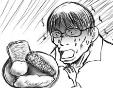
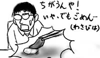

グループランチでアメリカーンなレストラン「Chili」へ。アメリカンなのかメキシカンなのかはっきりして欲しい。というかいつもながら食べ物の話題で申し訳ないです。
値段の手頃なランチメニューをよく考えずに頼んだところ、出て来たものは
- 衣をつけて揚げた巨大なステーキ肉(ゲンコツ２つ分以上)
- マッシュポテトの山(ゲンコツ１つ分以上)
- スイートコーン丸々１個
- ガーリックトースト１個
久しぶりに料理を前に脂汗が出ました。

衣部分を外しながら頑張って食べていると、向かいの席でサーモンステーキ(見た目もうまそうだったヨ！)を食べていたHowieが「次来た時もそれを頼む？」とニヤニヤしながら聞いてきます。「ノー」と答えると「うん、俺もそう思うよ」と言われました。知ってたなら忠告してください！
ESLの友人Winnieが来週には本国台湾へ帰るというので、日本食をおごることにしました。
休日出勤を早めに切り上げて、日本食レストランへ。寿司をほとんど食べたことがないというので、カリフォルニアロールの店に連れて行って寿司を誤解してもらうのも一興かと思ったのですが、さすがにかわいそうなので普通の寿司が食べられるところへ。
これが意外にも、こちらに来てから食べた寿司で一番うまかった気がします。ちょっとわさびが効きすぎているので、Winnieは大変なことになっていましたけど。寿司を分解し、わさびを取り去って別々に食べるWinnieに「その食べ方はちょっと違うんだ！」と言いたいのと同時に、なんだかとても申し訳ない気分に。

食べながら話していると「You are independent.」と言われました。僕の「グループになじめない感じ」はたかだか週に数時間の授業でバレるほど滲み出ているのですか。名付けるならスタンドアロンコンプレックス。